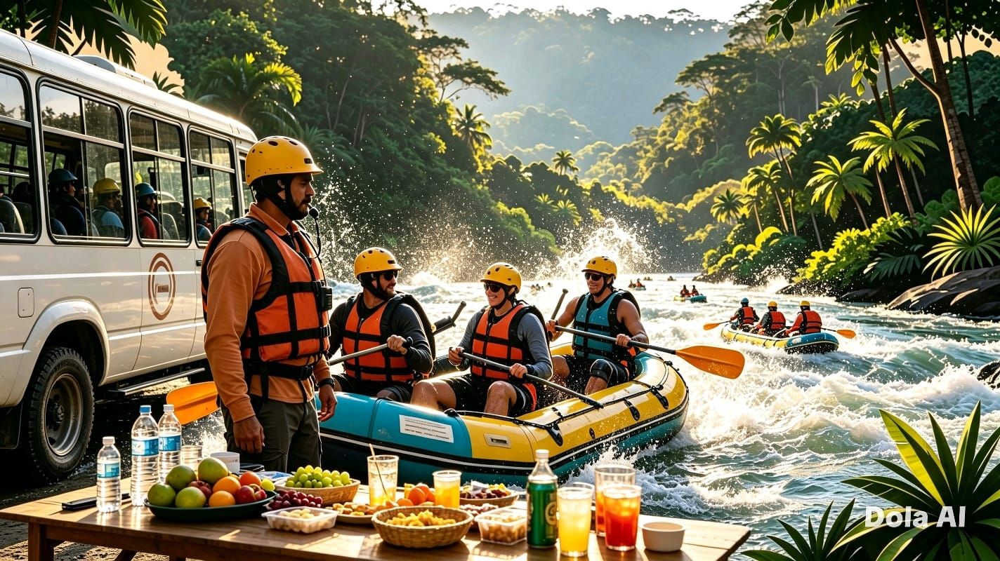
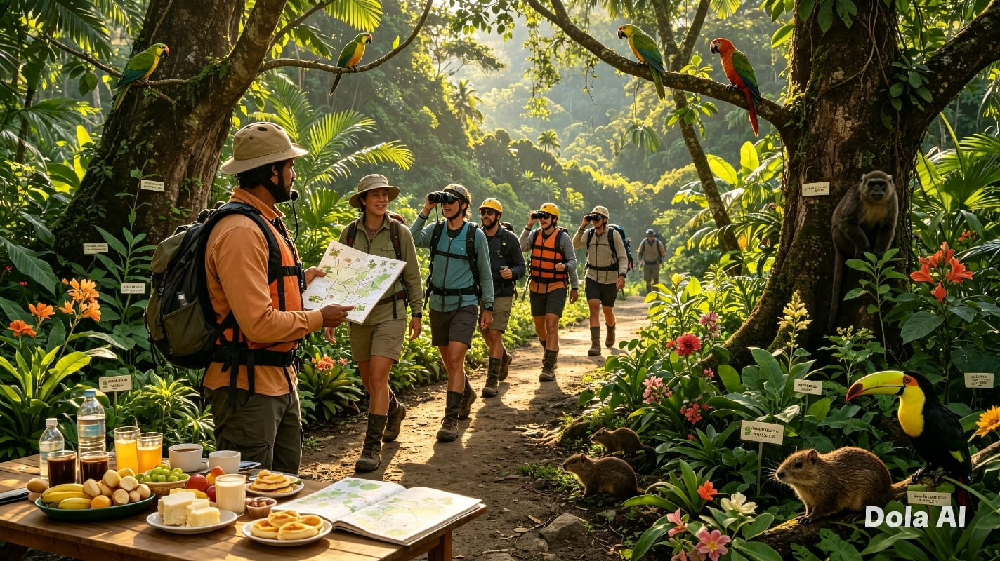
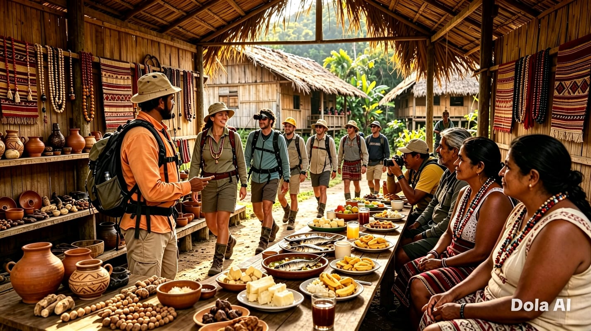
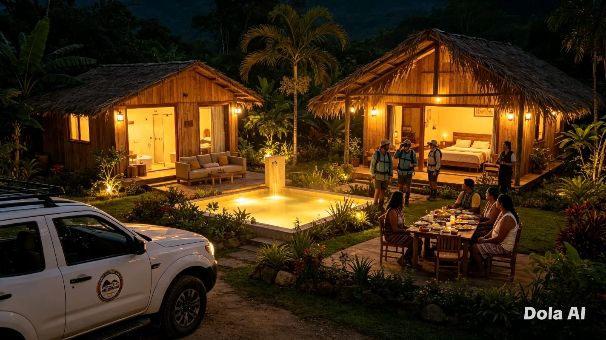

Paquetes y Servicios Turísticos
Elige la experiencia que más te guste. Todos los paquetes son personalizables.

🎯 Tour de Aventura: Rafting
Desde $45 USD / persona
Descenso por los ríos Napo o Misahuallí. Incluye equipo de seguridad, guía certificado y transporte.
- ✅ Equipo completo (chaleco, casco, remo)
- ✅ Guía profesional certificado
- ✅ Transporte ida y vuelta
- ✅ Refrigerio

🌿 Tour de Naturaleza y Selva
Desde $35 USD / persona
Caminata guiada por senderos amazónicos. Observación de aves, plantas medicinales y animales silvestres.
- ✅ Guía naturalista local
- ✅ Binoculares y mapa de flora
- ✅ Caminata de 3-4 horas
- ✅ Refrigerio típico

👨👩👧👦 Tour Cultural Comunitario
Desde $50 USD / persona
Visita a comunidad indígena: conoce su historia, lengua, artesanías y gastronomía tradicional. Incluye almuerzo.
- ✅ Recibimiento comunitario
- ✅ Taller de artesanía o cocina
- ✅ Almuerzo típico incluido
- ✅ Explicación de historia y cosmovisión

🌙 Paquete Combinado: 2 Días / 1 Noche
Desde $120 USD / persona
La experiencia completa: rafting + caminata en selva + visita cultural + alojamiento. Todo incluido.
- ✅ Alojamiento en lodge o cabaña
- ✅ 3 comidas al día
- ✅ Todas las actividades guiadas
- ✅ Transporte durante el tour